Plonjați în universul literar al lui Pavy Beloiu, unde imaginația și emoția se împletesc pentru a crea theori captivante. Explorați o colecție diversă de cărți, de la istorie și religie la poezii emoționante și eseuri introspective. Pavy oferă o voce distinctă în literatura contemporană, abordând o varietate de teme fundamentale cu profunzime și originalitate.
La Simeza - [Cărți]
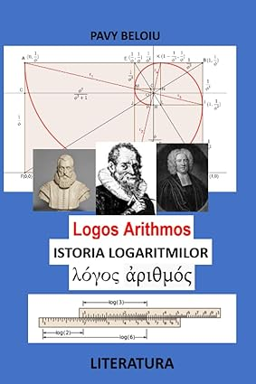
Istoria Logaritmilor
USA, 2023 (ASIN: B0CDNGY48G) John Napier; Just Burgi si W Briggs-logos arithmos si rigla de calcul-Noica si Moisescu despre 1 în matematică si religie-140 pag Singura carte in limba română despre logaritmi si misterele tabelelor logaritmice si trigonometrice.
Deschide și Citește
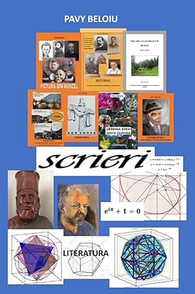
Scrieri
USA, 600 pag, 2023 (ASIN: B0C7J7X1QK) amintiri din copilărie, despre oameni de renume, regina Maria, Carol I si Ferdinand, Hitler si Mestrovici, decadența artei si Renașterea, istoria poliedrelor regulate, istoria logaritmilor si spira mirabilis-spirala logaritmilor, dosarul de securitate al tatălui cu informatori, album de pictura cu portrete celebre si peisaje din Câmpulung, Grecia si Spania, studii armonice cu secțiunea de aur, Matila Ghika si numărul de aur-masoneria, studiul comparativ în 10 limbi al traducerii Bibliei in româna de D Cornilescu, jurnale de călătorie, Ierusalim si Grecia, Dumitru Mangeron si ecuația coardei vibrante, sculptorul Cafengiu, Emil Palade si Paulescu, istoria matematicii si ecuația lui Euler in planul complex...
Deschide și Citește
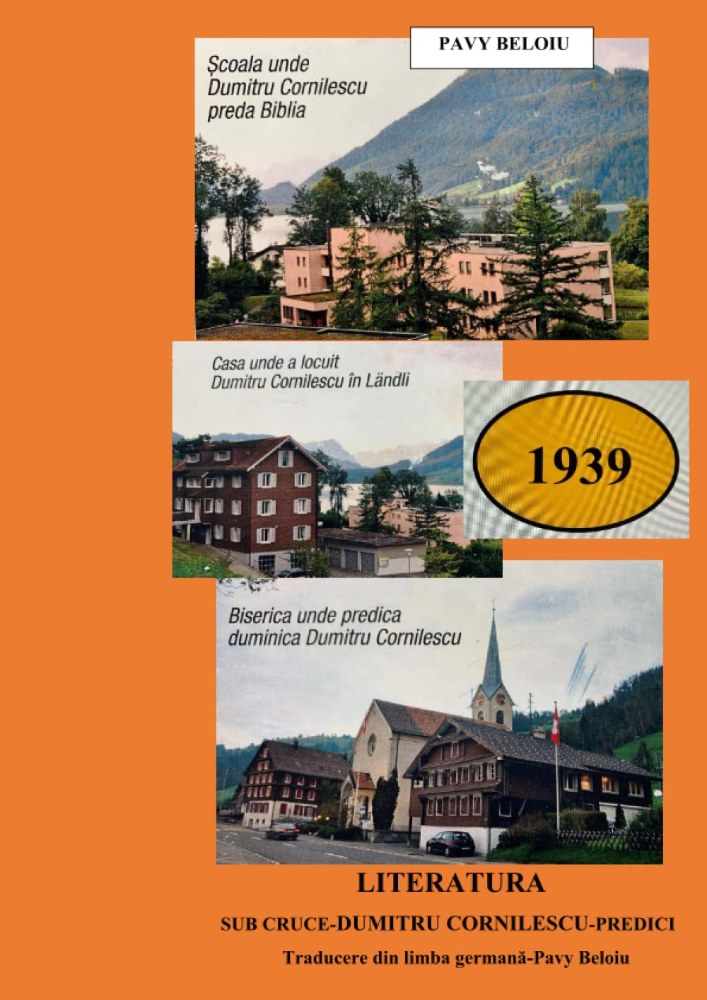
Sub Cruce
Predici-Dumitru Cornilescu-1939-traducere din germana, USA, 2020 in premiera traducere din germana Unter dem Kreuz-1939-prezentarea teologilor germani din predicile lui Cornilescu-comentarii (ASIN: B09YQF2S83).
Deschide și Citește
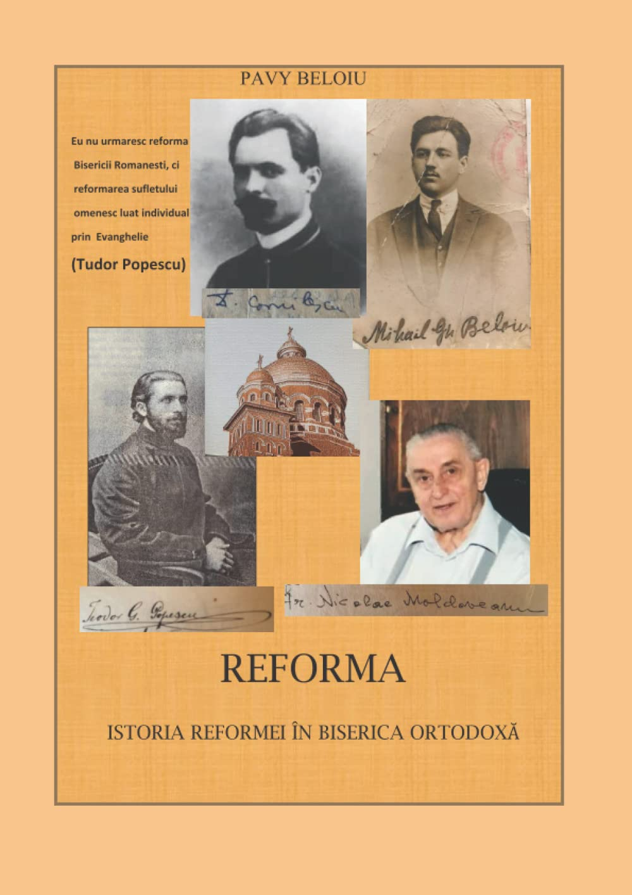
Reforma
Istoria Reformei in Biserica Ortodoxă, SER București 2021 (ASIN: B09M547T3T) Istorie ilustrată, 400 pag, istoria Bibliei, studiu lingvistic al traducerilor in română documente inedite despre reformatorii României Dumitru Cornilescu-Tudor Popescu-Mihai Beloiu-Nicolae Moldoveanu-Costache Ioanid-portrete-dosar de securitate, diplome si interviuri.
Deschide și Citește
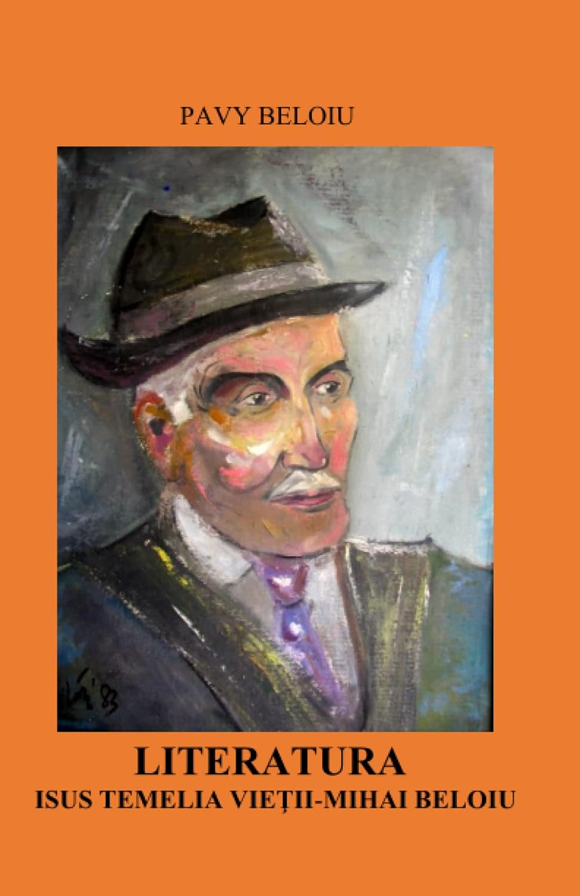
Mihai Beloiu-Isus Temelia Vieții,)
Făgăraș 2013 (ASIN: B09SP4LHP6) viața si opera tatălui meu-lucrarea de diploma la Teologie 1928-istorie si comentarii scrisori si documente inedite-istoria din exilul in Bărăgan
Deschide și Citește
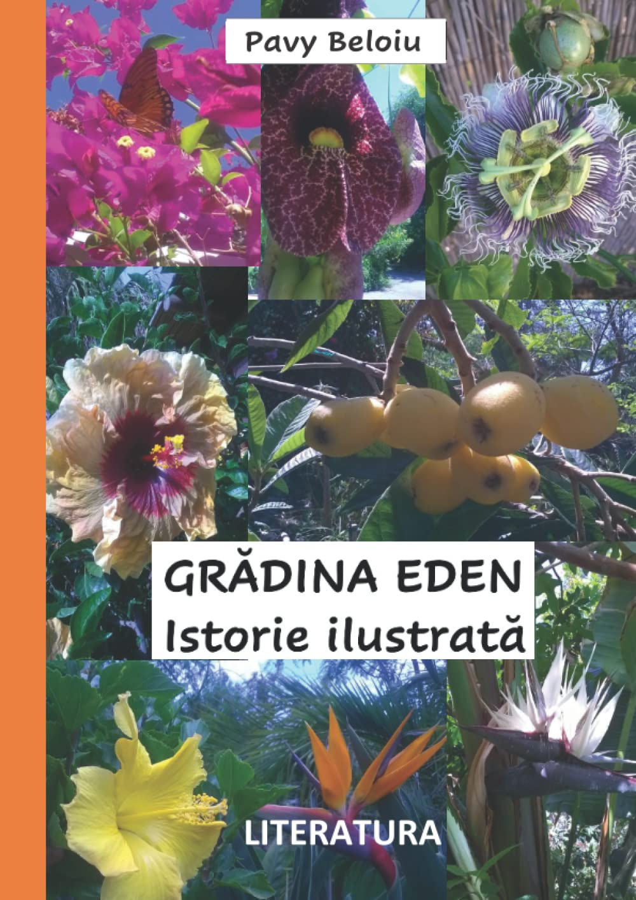
Gradina Eden
Istorie ilustrată-California, USA, 2020 ASIN:BOD57HM21F (ASIN: B0BGKQTQ1L) Istorie a vieții din California-gradina tropicală cu flori si copaci exotici, 160 pag.Sute de plante tropicale, cascade si fântâni subterane si in trepte-albine si botanica.
Deschide și Citește
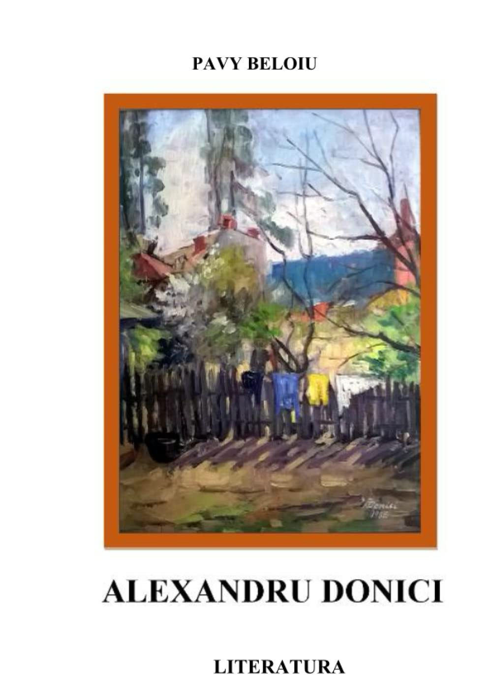
Alexandru Donici-pictorul din Câmpulung-Muscel-70 picturi si caiete de schițe-comentate (ASIN: B0B28KP811)
Deschide și Citește
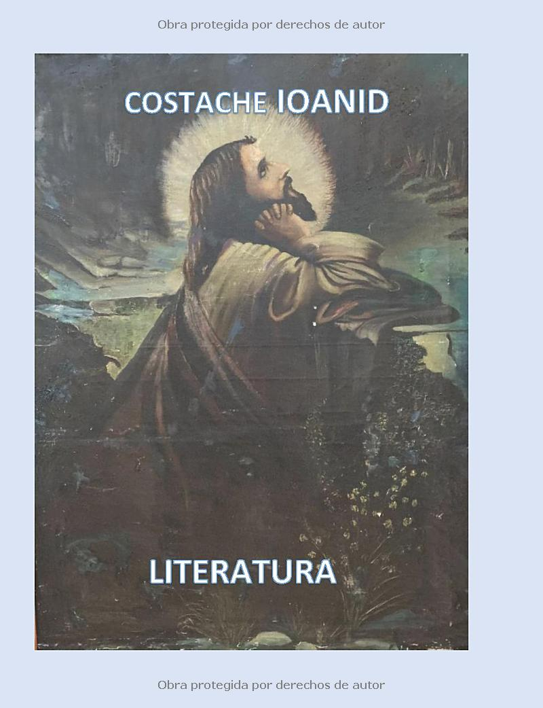
Cine ești Tu Doamne?
Costache Ioanid, proza. USA, 2021 (ASIN: B09NRC54JS) singura proza scrisa de Ioanid înainte de exilul in America-1982-istoria Bibliei ilustrată de pictorul german Anton Leinweber - comentarii plastice si comparații.
Deschide și Citește
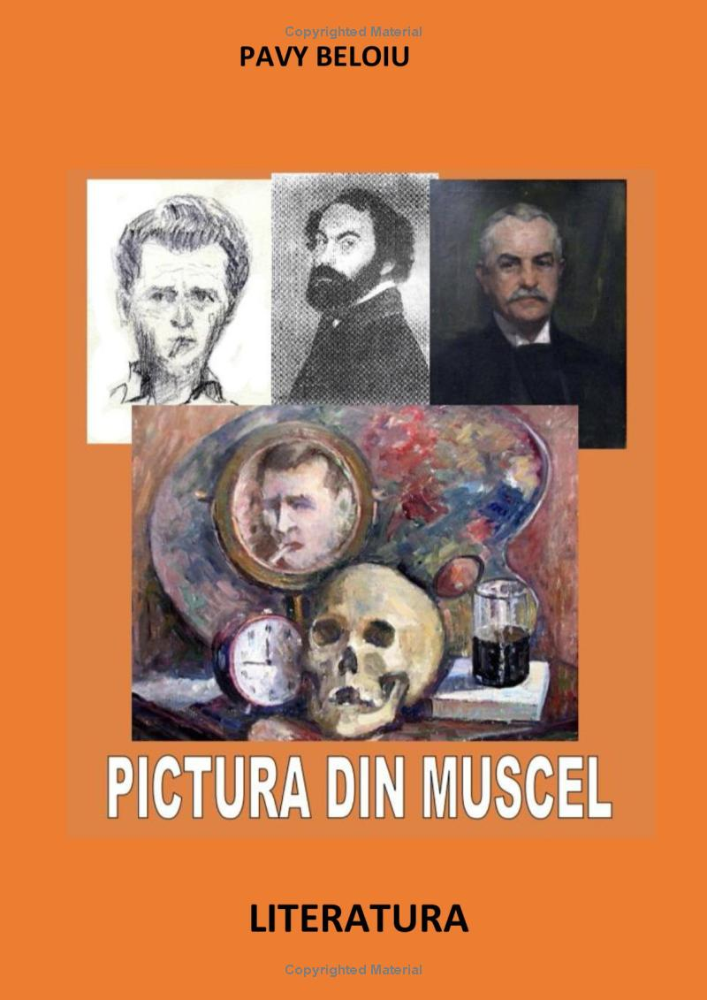
Istoria Picturii din Muscel
(Donici, Negulici si Mirea), Câmpulung 2022 (ASIN: B0B7QP8VN3) album Alexandru Donici, comentat-istoria pictorilor Negulici si Mirea cu comentarii si comparații 140 pag o excursie palpitanta prin galerii de arta, muzee, cimitire, biblioteci si castele
Deschide și Citește
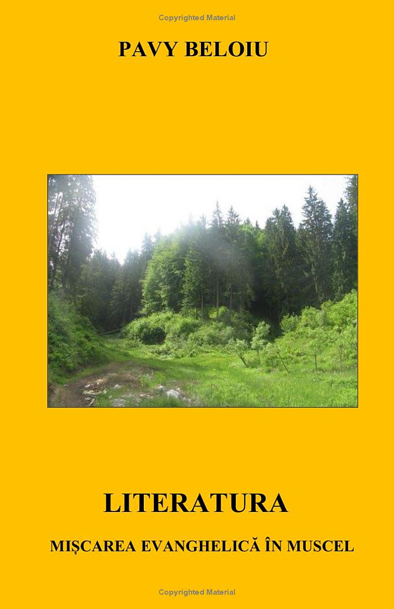
Mișcarea Evanghelica în Muscel,
Făgăraș, 2015 (ASIN: B09WHFWZX4) reforma apărută in Muscel-figuri de seamă Dimitrie Nanu, V Moisescu, Elie Mirea, 160 pag.
Deschide și Citește
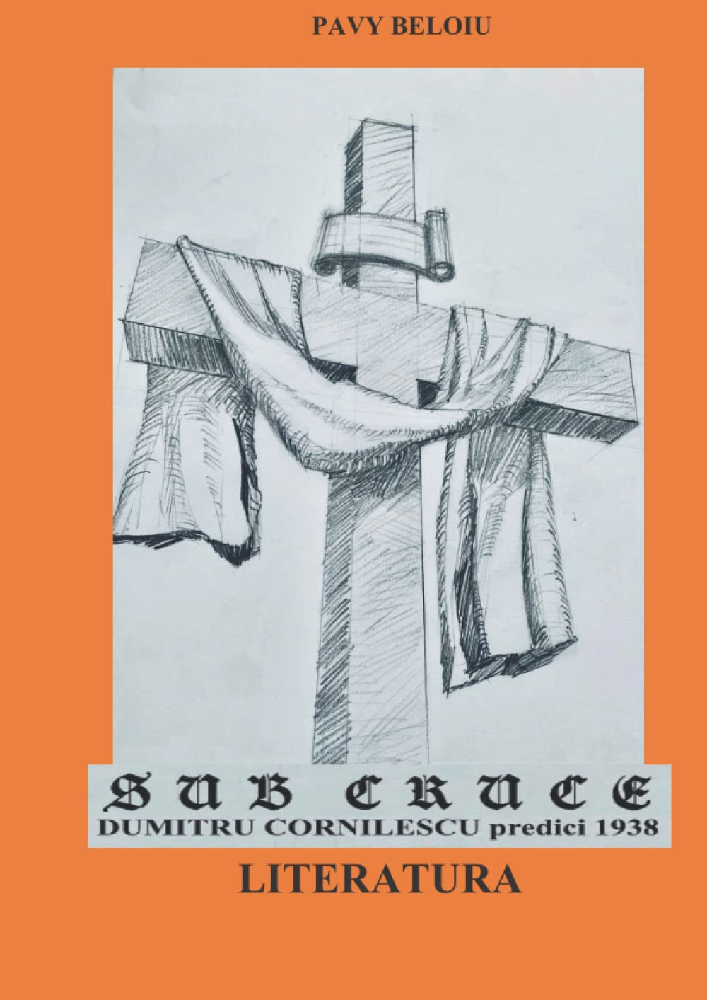
Sub Cruce
(ASIN: B0B14PLLG8) -Sub Cruce, Predici-Dumitru Cornilescu-1938-traducere din germană, SER, București 2020 in premiera traducere din germana Unter dem Kreuz-1938-scrisori document din Elveția Cornilescu
Deschide și Citește
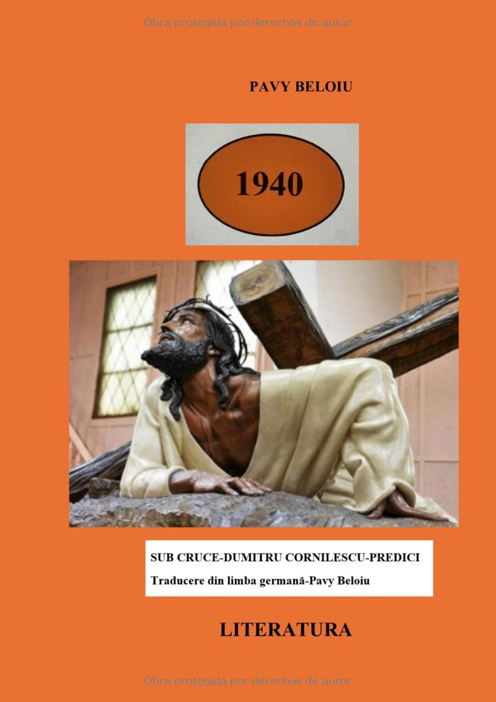
Sub Cruce - Traduceri
(ASIN: B0D4V5FJ91) -Sub Cruce Vol 3, Predici din 1940 in original, in romana din germana și descrierea locului din Elveția unde a predicat Cornilescu
Deschide și Citește
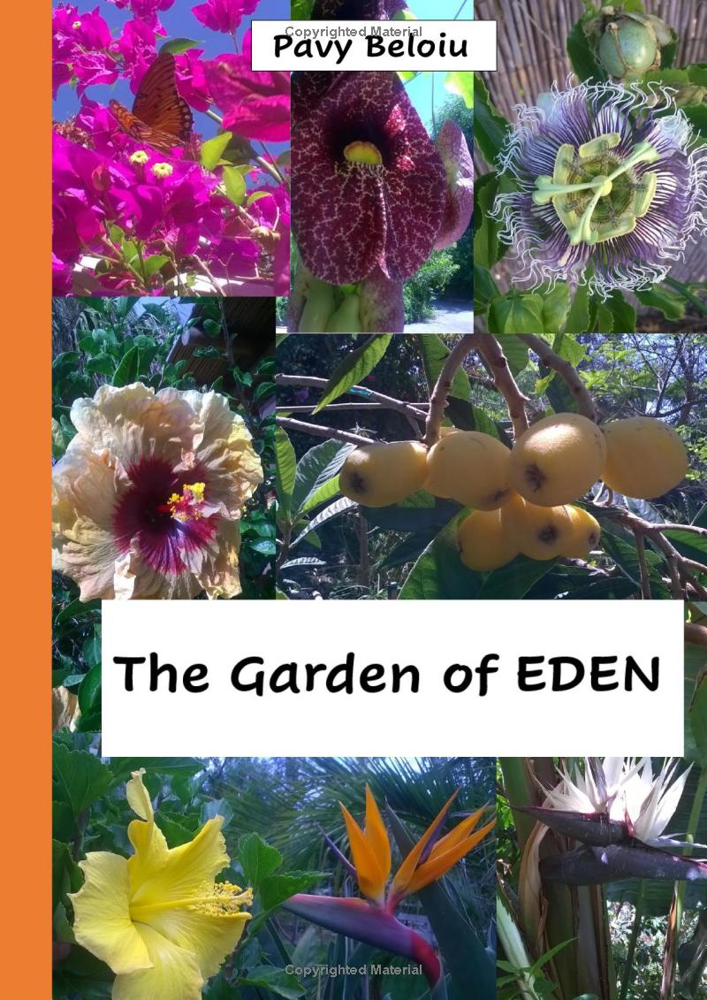
Garden of Eden
The garden of EDEN May 25, 2024 (ASIN:B0D57HM21F) This paper is a collection of original images, and the fragments of the memories that I lived in the Golden State of California, 15 years ago. There are more than 600 photographs, sketches, and projects I've had the courage to dream of, and at the end, I put them into practice.
Deschide și Citește
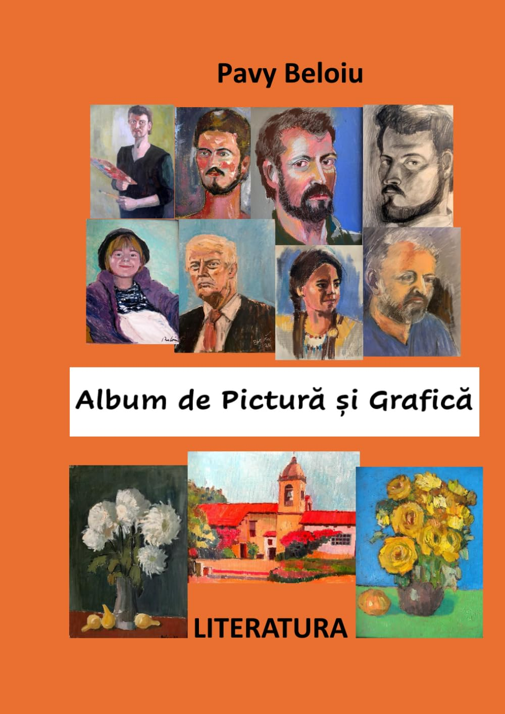
Album de pictură și grafică.
ASIN: B0D7Q8Y6WJ de Pavy Beloiu este o carte captivantă care explorează profunzimile literaturii românști. Autorul reușește să prezinte într-un mod accesibil și interesant aspectele unice ale acestei literaturi mai puțin cunoscute. Această carte este unică datorita picturilor originale create și comentate de autor.
Deschide și Citește
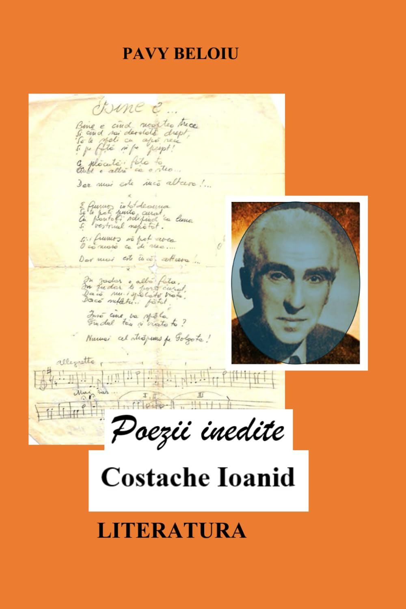
Poezii Inedite
Această carte unică, conține poezii originale scrise de Costache Ioanid. Scanate, descifrate și publicate in original de Pavy Beloiu. O carte de mare valoare pentru cultura românească. ASIN: B0D8T9QNFM (July 4, 2024).
Deschide și Citește
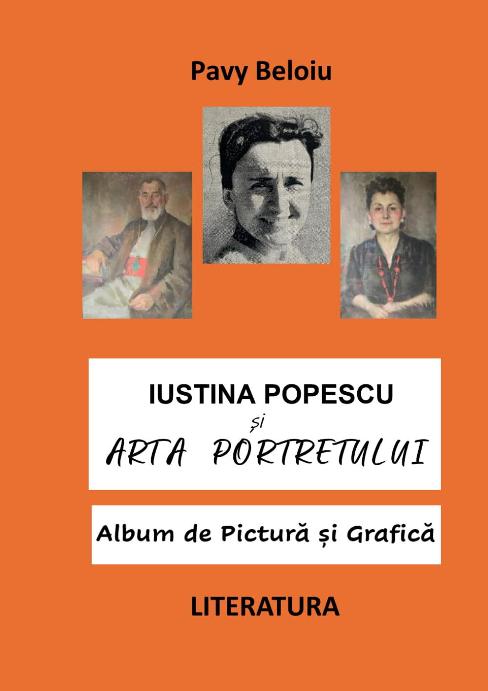
Iustina Popescu și Arta Portretului
O carte ilustrată despre viața și arta pictoriței Iustina Popescu (1919 - 1997), un talent inăscut care merită admirația și respectul nostru. ASIN B0DTKKBSF1, January 20, 2025, 240 pagini color, ISBN 979-8307711934
Deschide pr Citește